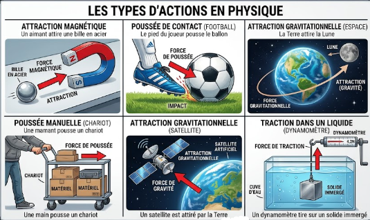
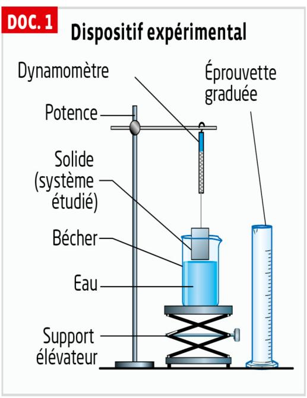

Thème : Mouvements et interactions · C. Poirault-Gauvin
« Si j'ai pu voir vraiment loin, c'est uniquement parce que je me suis tenu sur les épaules de géants. »
— Isaac Newton (1642 – 1727)
Partie 1 — Modéliser une action sur un système
Modéliser l'action d'un système extérieur sur le système étudié par une force ; représenter une force par un vecteur (norme, direction, sens).
Exploiter le principe des actions réciproques.
Distinguer actions à distance et actions de contact.
Identifier les actions modélisées par des forces dont les expressions mathématiques sont connues a priori.
Utiliser l'expression vectorielle de la force d'interaction gravitationnelle.
Utiliser l'expression vectorielle du poids d'un objet, approché par la force d'interaction gravitationnelle s'exerçant sur cet objet à la surface d'une planète.
Représenter qualitativement la force modélisant l'action d'un support dans des cas simples relevant de la statique.
Partie 2 — Principe d'inertie
Exploiter le principe d'inertie ou sa contraposée pour en déduire des informations soit sur la nature du mouvement, soit sur les forces.
Relier la variation entre deux instants voisins du vecteur vitesse à l'existence d'actions extérieures dont la somme est non nulle.
Relier la variation du vecteur vitesse dans le cas d'une chute libre à une dimension au sens du vecteur poids.
Réaliser et exploiter une vidéo ou une chronophotographie pour relier les variations du vecteur vitesse et la somme des forces appliquées.
1. Modéliser une force — Poids et gravitation
a. Actions de contact et actions à distance
Une action mécanique exercée par l'extérieur sur un système peut être :
une action de contact : il y a contact entre le système étudié et l'extérieur (ex. : le pied qui pousse un ballon) ;
une action à distance : il n'y a pas de contact entre le système étudié et l'extérieur (ex. : la Terre qui attire un objet, un aimant qui attire une bille en acier).
Doc 1 p198
On parle d'action
lorsqu'il y a contact entre le système étudié et l'extérieur.
On parle d'action
lorsqu'il n'y a pas de contact entre le système étudié et l'extérieur.
Doc 1 p198 — a. force de contact F1 · b. force à distance F2
Classer quelques exemples
Pour chaque situation, indique le type d'action mise en jeu.

b. Diagramme objet-interactions
Pour représenter les actions mécaniques subies par un système, on construit un diagramme objet-interactions :
on place le système étudié au centre ;
on identifie tous les objets extérieurs qui interagissent avec lui (par contact et/ou à distance) ;
on relie chaque objet extérieur au système par un trait, annoté du type d'interaction.
Exemple : juste après le coup de pied, en référentiel terrestre, le ballon subit une interaction de contact avec le pied du joueur et une interaction à distance avec la Terre.
Exemple : le coup de pied sur un ballon de foot
Système étudié : le ballon · Référentiel : terrestre.
Ajoute les interactions une à une puis vérifie le diagramme.
Bilan : une action mécanique exercée par l'extérieur sur le système étudié est modélisée par une force, représentée par un vecteur ayant une direction, un sens et une norme (voir section suivante).
c. Modéliser une force par un vecteur
Une action mécanique exercée par un objet A sur un système B est modélisée par une force, notée FA/B, représentée par un vecteur caractérisé par :
son point d'application : le point où l'on considère que la force s'exerce ;
sa direction : celle de la droite d'action de la force ;
son sens ;
sa norme (ou valeur), proportionnelle à l'intensité de la force, exprimée en newton (N).
Action du joueur sur le ballon
Fais varier la norme et la direction de la force Fjoueur/ballon et observe le vecteur se construire en temps réel.
Échelle utilisée sur le schéma : 1 cm ↔ 50 N.
d. Le poids d'un objet
Le poidsP d'un objet est la force modélisant l'interaction gravitationnelle exercée par un astre (la Terre, par exemple) sur cet objet. Il est caractérisé par :
un point d'application au centre de gravité de l'objet ;
une direction verticale ;
un sens vers le bas (vers le centre de l'astre) ;
une norme P = m × g.
P = m × g
Astre
Terre
Lune
Mars
Jupiter
g (N·kg⁻¹)
9,8
1,62
3,7
24,8
P = 686 N
e. Interaction gravitationnelle
Deux objets A et B, de masses mA et mB, séparés d'une distance d, exercent l'un sur l'autre une force d'interaction gravitationnelle attractive, de norme :
FA/B = G × (mA × mB) / d²
avec G = 6,67 × 10⁻¹¹ N·m²·kg⁻² (constante de gravitation universelle), mA et mB en kg, d en m et FA/B en N.
Les forces FA/B et FB/A ont même direction (la droite (AB)), même norme, sont de sens opposés, et dirigées chacune vers l'autre objet (attraction).
Lorsqu'un système A exerce une force FA/B sur un système B, alors B exerce simultanément sur A une force FB/A telle que :
même direction ;
même norme ;
sens opposé.
C'est le principe des actions réciproques (3e loi de Newton), valable que les systèmes soient au repos ou en mouvement.
FA/B = − FB/A
Exemple : lors d'un tir à la corde, la force exercée par la main d'un joueur sur la corde et la force exercée par la corde sur cette main sont toujours égales en norme et de sens opposés — ce n'est pas une différence de force « dans la corde » qui fait gagner une équipe, mais une différence de force de frottement au sol sous les appuis de chaque joueur.
Jeu de la corde
Règle la force de traction au sol de chaque équipe (grip / frottement sur leurs appuis) et observe ce qui se passe au niveau de la corde.
Égalité parfaite — la corde ne bouge pas.
🔬 Simulation PhET
Visualise les deux forces d'interaction entre deux masses et observe qu'elles sont toujours égales et opposées.
Principe d'inertie : tout corps persévère dans son état de repos ou de mouvement rectiligne uniforme si les forces qui s'exercent sur lui se compensent.
Contraposée : si, entre deux instants voisins, le vecteur vitesse d'un système varie, alors les forces qui s'exercent sur lui ne se compensent pas.
Réciproque : si les forces qui s'exercent sur un système ne se compensent pas, alors son vecteur vitesse varie.
Anime les trois situations ci-dessous (camion qui démarre, bus qui freine, balle qui tombe) pour observer le principe d'inertie en action, puis réponds aux questions.
D'après l'animation ci-dessus (frottements négligés dans les 3 cas), réponds aux questions suivantes.
1. Que se passe-t-il pour le bloc lorsque le camion démarre ?
2. Que se passe-t-il pour le bloc lorsque le bus freine et s'arrête ?
3. Une fois la balle lâchée, comment évolue sa vitesse horizontale (frottements de l'air négligés) ?
1. Sans frottement, rien n'entraîne le bloc avec le camion : par rapport au sol (référentiel terrestre), il reste immobile (principe d'inertie). Comme le camion avance sous lui, le bloc semble reculer vers l'arrière du plateau.
2. Sans frottement, rien ne freine le bloc : il conserve la vitesse qu'il avait avant le freinage et continue tout droit (principe d'inertie). Comme le bus ralentit, le bloc semble avancer vers le devant du bus.
3. Une fois lâchée, la balle n'est plus soumise qu'à son poids (chute libre) : aucune force horizontale n'agit sur elle, donc d'après le principe d'inertie sa vitesse horizontale reste constante — seule sa vitesse verticale augmente sous l'effet du poids.
4. La chute libre
Un système est en chute libre lorsqu'il n'est soumis qu'à son poids (l'action de l'air étant négligée).
v = g × Δt et d = g × Δt² / 2
En chute libre sans vitesse initiale, le vecteur vitesse garde une direction constante (verticale) mais sa valeur augmente régulièrement : le vecteur vitesse s'allonge au cours du temps → le mouvement est rectiligne accéléré, conformément à la contraposée du principe d'inertie (le poids, seule force appliquée, ne peut être compensé).
Un système est en chute libre lorsqu'il n'est soumis qu'à
Données de Galilée pour une chute sans vitesse initiale :
v = g × Δt et d = g × Δt² / 2 (avec g = 9,8 m·s⁻²)
Complète le tableau (M₀ te donne l'exemple), puis vérifie tes réponses.
Position
M₀
M₁
M₂
M₃
M₄
M₅
M₆
M₇
Δt (s)
0
0,04
0,08
0,12
0,16
0,20
0,24
0,28
d (m)
v (m·s⁻¹)
Échelle des vecteurs vitesse (sur le schéma papier) : 1 cm ↔ 0,3 m·s⁻¹. Compare v4 et v5 : le vecteur vitesse s'allonge-t-il ?
Vérifie ou affiche la correction pour voir le schéma.
Chaque vecteur vitesse est tracé verticalement, dans le sens du mouvement, avec son origine au point où il s'applique (M₄ pour v4, M₅ pour v5) — légèrement décalés à gauche et à droite de la trajectoire pour mieux les distinguer.
1. Découvrir le principe d'inertie
📄 Activité documentaire — Découvrir le principe d'inertie
Ouvre le document pour répondre aux questions ci-dessous.
1. Selon Aristote, il faudrait une force dirigée dans le sens du mouvement pour que le skateur continue d'avancer : sans cette « force motrice », il s'arrêterait. C'est cette idée que Galilée puis Newton ont réfutée.
2. On l'appelle un mouvement rectiligne uniforme (MRU).
3.a Les forces qui s'exercent alors sur le skateur (poids et réaction du support) se compenseraient parfaitement : d'après le principe d'inertie, il continuerait son mouvement en ligne droite à vitesse constante.
3.b Sur la partie horizontale, le skateur ne s'enfonce pas et ne s'envole pas : la composante verticale des forces reste nulle, donc la réaction du support compense exactement le poids à chaque instant.
3.c Le frottement de roulement n'apparaît que lorsqu'il y a mouvement relatif entre le skateur et la piste. À l'arrêt, il n'y a plus de glissement/roulement, donc plus de force de frottement à compenser : le système reste à l'équilibre (poids et réaction se compensent).
4. Le poids P (action à distance de la Terre), la réaction normale du support F1 (action de contact) et la force de frottement F2 (action de contact, qui s'oppose au mouvement).
5. À mesure que le skateur ralentit, la vitesse de glissement/roulement diminue, ce qui réduit l'intensité de la force de frottement. Quand le skateur s'arrête, cette force devient nulle (voir question 3.c).
6. Aristote pensait qu'une force motrice était nécessaire pour entretenir tout mouvement. Or un système peut conserver un mouvement rectiligne uniforme sans aucune force motrice, tant que les forces qui s'exercent sur lui se compensent (principe d'inertie) — c'est l'absence de compensation (le frottement) qui freine le skateur, et non l'absence d'une « force motrice ».
2. Simulation PhET « Forces and Motion: Basics »
Va dans l'onglet « Mouvement » de la simulation ci-dessous. Place un personnage ou un objet sur le chariot, choisis « Aucun » frottement, pousse-le brièvement puis relâche : observe l'aiguille du compteur de vitesse et le vecteur vitesse. Recommence ensuite avec un frottement réglé sur « Beaucoup ».
1. Onglet « Mouvement », sans frottement : une fois la poussée terminée, comment évolue la vitesse de l'objet ?
2. Une fois la poussée terminée et sans frottement, que peut-on dire des forces qui s'exercent sur l'objet ?
3. Règle maintenant le frottement sur « Beaucoup » et pousse à nouveau brièvement : que se passe-t-il après la poussée, et pourquoi (principe d'inertie) ?
1. Sans frottement, une fois la poussée terminée, plus aucune force horizontale n'agit sur l'objet : d'après le principe d'inertie, il conserve la vitesse qu'il avait et continue en ligne droite à vitesse constante.
2. Verticalement, le poids et la réaction du support se compensent (l'objet ne s'enfonce pas et ne décolle pas) ; horizontalement, sans frottement, aucune force ne s'exerce une fois la poussée relâchée : les forces se compensent globalement, ce qui est cohérent avec la vitesse constante observée.
3. Avec du frottement, une force de frottement horizontale s'oppose au mouvement même après la fin de la poussée : les forces ne se compensent plus. D'après la réciproque du principe d'inertie, le vecteur vitesse varie donc — l'objet ralentit jusqu'à l'arrêt.
3. Activité documentaire — Des satellites en orbite (Histoire des sciences)
La Lune est le satellite naturel de la Terre mais de très nombreux satellites artificiels, fonctionnels ou non, orbitent autour de notre planète.
● Comment un satellite peut-il rester en orbite circulaire autour de la Terre ?
1. Connaître — Nommer précisément « la force de la gravité » (DOC. 2) tel qu'on le fait aujourd'hui lorsqu'on étudie le mouvement de la Lune autour de la Terre.
Pense à comment on appelle cette force en physique-chimie : elle porte le nom du physicien anglais auteur du DOC. 2.
Il s'agit de la force d'interaction gravitationnelle (ou force de gravitation universelle) exercée par la Terre sur la Lune.
2. Analyser-raisonner — Préciser la principale différence entre l'action de la Terre sur un des satellites, comme la Lune, et l'action de la fronde sur une pierre (DOC. 1).
Y a-t-il un contact matériel entre la Terre et la Lune ? Et entre la fronde et la pierre ?
L'action de la Terre sur un satellite est une action à distance (interaction gravitationnelle, sans contact), alors que l'action de la fronde sur la pierre est une action de contact (la fronde touche la pierre).
3. Valider — Justifier que l'expression vectorielle de la force d'interaction gravitationnelle est compatible avec les affirmations de Newton (DOC. 2).
Relis le DOC. 2 phrase par phrase et retrouve, dans l'expression vectorielle, ce qui correspond à chaque affirmation de Newton (direction, variation avec la distance, dépendance à la masse).
Newton affirme que la force est dirigée vers la Terre (attractive), varie en raison inverse du carré de la distance, et est proportionnelle à la quantité de matière (masse) de chaque corps. Ces trois caractéristiques se retrouvent bien dans l'expression FA/B = −G×(mA×mB/d²)×uAB : le signe « − » et le vecteur uAB orienté de A vers B donnent une force dirigée vers l'astre attracteur, le terme en 1/d² traduit la décroissance avec le carré de la distance, et le produit mA×mB traduit la proportionnalité aux masses.
4. Réaliser — Le 25 juillet 2018, Ariane 5 a embarqué quatre satellites Galiléo d'une masse de 730 kg chacun pour améliorer la radionavigation. Calculer la norme de la force d'interaction gravitationnelle exercée par la Terre sur un de ces satellites lorsqu'il se déplace en orbite circulaire à l'altitude de 23 222 km.
Calcule d'abord la distance d entre le centre de la Terre et le satellite : d = RT + h. Utilise ensuite F = G × (MT × m) / d² en convertissant toutes les longueurs en mètres.
d = RT + h = 6 380 + 23 222 = 29 602 km = 2,9602 × 10⁷ m.
F = G × (MT × m) / d² = 6,67×10⁻¹¹ × (5,972×10²⁴ × 730) / (2,9602×10⁷)² ≈ 331,8 N.
5. Communiquer — oral — Réaliser une synthèse permettant d'expliquer comment un satellite, comme Galiléo par exemple, peut rester en orbite circulaire autour de la Terre.
Repense au rôle de la force gravitationnelle dans un mouvement circulaire : elle ne s'oppose pas au mouvement mais en change continuellement la direction (comme la pierre au bout de la fronde, DOC. 1).
La seule force qui s'exerce sur le satellite est la force d'interaction gravitationnelle exercée par la Terre, dirigée vers le centre de la Terre. Cette force ne fait pas « tomber » le satellite : elle joue le rôle de force qui courbe en permanence sa trajectoire vers la Terre, l'empêchant de s'échapper en ligne droite (comme le prévoirait le principe d'inertie en son absence), tout en le maintenant à distance constante. C'est exactement l'analogie de Newton (DOC. 2) : comme la pierre lancée à la fronde (DOC. 1), plus la vitesse est grande, plus la « chute » est retardée, jusqu'à ne jamais retomber — le satellite reste en orbite.
4. Activité documentaire — Performances de Superman
Superman, un des super-héros les plus célèbres, a été créé pour une bande dessinée en 1938. Ses superpouvoirs se sont développés au fil des albums. Ainsi, en 2018, Superman est capable de voler jusqu'à la planète Mars, alors que dans le tout premier album, il ne vole pas mais saute tout de même plus haut qu'un immeuble de vingt étages.
● S'il avait pu se rendre sur Mars en 1938 avec ses superpouvoirs de l'époque, Superman y aurait-il été aussi performant que sur Terre ?
1. S'approprier — Dans le référentiel « marsocentrique », schématiser Mars par un cercle de centre O et, au voisinage de sa surface, Superman modélisé par un point matériel S de masse m.
Le point S doit être placé juste au-dessus du cercle représentant Mars — « au voisinage de la surface » signifie que la distance OS est quasiment égale au rayon R de Mars.
Espace pour le schéma :
On dessine un cercle représentant Mars, de centre O. Le point S (Superman) est placé juste au-dessus de la surface du cercle, de sorte que la distance OS ≈ R (rayon de Mars).
2.a. En première approximation, le poids d'un système au voisinage de la surface d'une planète est égal à la force d'interaction gravitationnelle modélisant l'action exercée par la planète sur ce système. En déduire l'expression vectorielle du poids P de Superman sur Mars en fonction de G, m (masse de Superman), M et R (masse et rayon de Mars) et du vecteur uOS de norme 1, de direction (OS), orienté de O vers S.
Remplace, dans l'expression de la force d'interaction gravitationnelle, A par O (centre de Mars), B par S (Superman), mA par M, mB par m et d par R.
P = − G × (M×m/R²) × uOS. Le poids est dirigé vers le centre de Mars (signe « − »), donc dans le sens opposé à uOS qui pointe vers l'extérieur (de O vers S).
2.b. Exprimer la norme P du poids de Superman sur Mars en fonction de sa masse et de l'intensité de la pesanteur sur cette planète.
P = m × gMars, comme pour le poids sur Terre (P = m × g).
2.c. En comparant les réponses des deux questions précédentes, exprimer puis calculer l'intensité de la pesanteur sur Mars.
Les deux expressions de la norme du poids (m×gMars et G×M×m/R²) sont égales : simplifie par m pour isoler gMars.
3.a. Valider — S'il avait pu se rendre sur Mars en 1938 avec ses superpouvoirs de l'époque, Superman y aurait-il été aussi performant que sur Terre ?
Compare gMars (question 2.c) à gTerre = 9,8 N·kg⁻¹, et repense à l'exemple des astronautes sur la Lune (DOCUMENT).
Comme gMars (3,73 N·kg⁻¹) est plus faible que gTerre (9,8 N·kg⁻¹), le même effort musculaire produirait des sauts encore plus impressionnants sur Mars que sur Terre — sur le même principe que les astronautes qui sautent plus haut sur la Lune (DOCUMENT).
3.b. En supposant que les performances de Superman sur sa planète natale Krypton sont les mêmes que celles d'un athlète sur Terre, comparer l'intensité de la pesanteur sur Krypton à celle sur Terre.
Le DOCUMENT explique les exploits de Superman sur Terre par la faiblesse de la pesanteur terrestre par rapport à Krypton — même raisonnement que pour les astronautes sur la Lune, mais en sens inverse.
Si les capacités « normales » de Superman (habitué à Krypton) correspondent à celles d'un simple athlète terrestre une fois sur Terre, c'est que la pesanteur terrestre est plus faible pour lui que celle à laquelle il est habitué : donc gKrypton > gTerre — exactement comme un astronaute (habitué à gTerre) bondit plus haut sur la Lune où gLune < gTerre.
5. TP — Rééducation en piscine : la poussée d'Archimède (activité expérimentale)
Contexte :Dans le cas de lésions musculaires ou d'accidents graves, de nombreux professionnels de santé préconisent la rééducation en piscine. Le milieu aquatique offrirait un « allègement » du corps, permettant de diminuer la pression exercée sur les articulations.
❓ Problématique : Comment modéliser l'action de l'eau sur un système immergé ?
DOC. 1 — Dispositif expérimental

DOC. 2 — La rééducation en piscine
Pourquoi choisir la rééducation en piscine ?
La rééducation en piscine est souvent préconisée par les kinésithérapeutes car le milieu aquatique présente de nombreux avantages. Être dans l'eau est idéal car le corps est en quasi-apesanteur. L'allègement du corps permet de diminuer la pression exercée sur les articulations ou les os fracturés. On peut ainsi reprendre plus facilement appui sur ses membres et remarcher plus rapidement.
D'après « La rééducation en piscine » (guide-piscine.fr)
D'après le document 2, lorsqu'un solide est immergé dans l'eau, on dit qu'il est « allégé ». Qu'attendez-vous comme résultat pour l'indication du dynamomètre lorsque le solide passe de l'air à l'eau ? Justifiez.
🎬 Visionner la vidéo support
1. Réaliser
Parcours 1 — Bécher + dynamomètre
Mettre en place le dispositif expérimental selon le DOC. 1 (avec le bécher).
Suspendre le solide au dynamomètre.
Relever la mesure du dynamomètre lorsque le solide est dans l'air (hors de l'eau).
Faire monter le support élévateur jusqu'à ce que le solide soit totalement immergé.
Relever à nouveau la mesure du dynamomètre.
Situation
Dynamomètre (N)
Solide dans l'air
Solide totalement immergé
Parcours 2 — Éprouvette graduée + dynamomètre
Mettre en place le dispositif en remplaçant le bécher par une éprouvette graduée.
Suspendre le solide au dynamomètre.
Relever la mesure du dynamomètre et le niveau de l'eau lorsque le solide est dans l'air.
Faire monter le support jusqu'à immersion totale du solide.
Relever la mesure du dynamomètre et le nouveau niveau de l'eau.
Situation
Dyn. (N)
Niveau (mL)
Dans l'air
V₁ =
Totalement immergé
V₂ =
→ Calculer le volume du solide immergé :
Vsolide = V₂ − V₁ = mL = cm³ = m³
2. Analyser — Raisonner
2.1 Parcours 1
a. Calculer l'écart entre les deux mesures du dynamomètre (formule, calcul, résultat).
ΔF =
b. Dresser le bilan des forces appliquées au solide immergé.
Nom et symbole de la force
Action de contact ou à distance
Point d'application
Direction
Sens
Valeur
c. En déduire la valeur de la poussée exercée par l'eau sur le solide.
d. En quoi la situation ne correspond-elle pas réellement à une « quasi-apesanteur » et un « allègement » complet, comme le décrit le DOC. 2 ?
2.2 Parcours 2
a. Calculer la masse du volume d'eau déplacé meau par le solide lors de l'immersion.
b. En déduire le poids de ce volume d'eau déplacé Peau déplacée.
c. Comparer cette valeur avec la diminution de l'indication du dynamomètre ΔF. Que remarquez-vous ?
Énoncé à vérifier : Lorsqu'un solide est totalement immergé, la norme de la force exercée par le fluide est égale au poids du fluide ayant le même volume que le solide.
d. Vos résultats confirment-ils cet énoncé ? Justifier en détaillant le calcul d'incertitude ou la comparaison numérique.
3. Communiquer — oral
En utilisant un support visuel, présenter oralement à la classe (élèves ayant traité l'autre parcours) votre démarche expérimentale et l'interprétation de vos résultats.
⚠️ Votre présentation doit obligatoirement inclure : un schéma des forces modélisant les actions exercées sur le système étudié.
Espace pour le schéma des forces (à réaliser ci-dessous) :
Synthèse commune (après les présentations orales)
1. Comment s'appelle la force exercée par un fluide sur un solide immergé ? Quelle est sa direction et son sens ?
2. Compléter l'énoncé du principe d'Archimède en une phrase complète.
« Tout corps partiellement ou totalement
au repos subit, de la part de ce fluide, une force
,
dirigée vers le
,
appelée
,
dont la valeur est égale
».
« Tout corps partiellement ou totalement immergé dans un fluide au repos subit, de la part de ce fluide, une force verticale, dirigée vers le haut, appelée poussée d'Archimède, dont la valeur est égale au poids du volume de fluide déplacé ».
3. Écrire la formule de la poussée d'Archimède en précisant les unités de chaque grandeur.
Π = ρfluide × Vimmergé × g
avec Π en N, ρfluide en kg·m⁻³, Vimmergé en m³ et g en N·kg⁻¹.
6. TP — Chute d'un parachutiste (activité expérimentale — auto-correction)
Au cours de sa chute et avant l'ouverture de son parachute, la vitesse d'un parachutiste varie dans le référentiel terrestre.
➜ Problématique : comment évolue la vitesse du parachutiste avant qu'il n'ouvre son parachute, et quel lien peut-on faire avec les forces exercées sur le parachutiste ?
Données
Donnée 1 — Principe d'inertie
Tout corps persévère dans son état de repos ou de mouvement rectiligne uniforme si les forces qui s'exercent sur lui se compensent.
Contraposée : lorsque le vecteur vitesse varie entre deux instants voisins, les forces ne se compensent pas, et réciproquement.
Donnée 2 — Force de frottement fluide
Lorsqu'un objet se déplace dans un fluide, il est soumis à une force de frottement :
de même direction que le mouvement, mais de sens opposé ;
dont la norme augmente avec la valeur de la vitesse ;
qui dépend de la nature du fluide.
Donnée 3 — Rappel : valeur de la vitesse (programme de Seconde — B.O.)
Soit un point mobile M dont on repère les positions successives M₀, M₁, …, Mi, … aux dates t₀, t₁, …, ti, … séparées d'une durée constante Δt.
La valeur de la vitesse au point Mi est approchée par :
Ouvrir Latispro. Menu : Acquisition > Acquisition vidéo.
Charger le fichier TP-chute_glycerol.avi fourni par l'enseignant.
Étalonnage de l'échelle : cliquer sur Définir l'échelle, tracer un segment sur les graduations de l'éprouvette et entrer la longueur réelle en cm.
Définir l'origine : placer l'origine (0 ; 0) en haut de l'éprouvette, axe y orienté vers le bas.
Étape 2 — Pointage des positions successives de la bille
Revenir à l'image 0 (début de la vidéo).
Activer le pointage : cliquer sur le bouton Pointage dans la barre d'outils.
Cliquer sur le centre de la bille à chaque image. Latispro enregistre automatiquement les coordonnées (xi, yi) et la date ti.
Pointer toutes les positions jusqu'à ce que la bille approche du fond. S'arrêter avant le fond.
Étape 3 — Calcul de la valeur de la vitesse (formule B.O. Seconde)
La chute est verticale : seule la coordonnée y varie. La valeur de la vitesse entre deux positions consécutives Mi−1 et Mi est donc :
v(Mi) = (yi − yi−1) / (ti − ti−1)
Saisie dans le tableur Latispro : créer une colonne v avec la formule : (y[i] - y[i-1]) / (t[i] - t[i-1])
⚠️ Attention : si l'axe y est orienté vers le bas, yi > yi−1 donc v > 0. Vérifier le signe des résultats.
Tracer le graphe v = f(t) : Graphe > Nouveau graphe > t en abscisse, v en ordonnée.
Observer les deux phases : vitesse croissante puis vitesse constante (vitesse limite).
Étape 4 — Représentation des vecteurs vitesse
Le mouvement étant vertical, seule la composante y intervient. Dans Latispro, les vecteurs vitesse sont tracés à partir des colonnes y et t uniquement.
Dans Latispro : Graphe > Vecteurs vitesse — sélectionner les colonnes y et v pour afficher les vecteurs v(Mi) le long de l'axe vertical en chaque point Mi.
1. S'approprier — Réaliser
Réaliser le protocole proposé avec Latispro. Reproduire à la main dans les encadrés ci-dessous : le graphe v = f(t) (axes, unités, deux phases délimitées) et les vecteurs vitesse sur un schéma de la trajectoire verticale de la bille, en deux positions voisines caractéristiques de chaque phase.
Graphe v = f(t) :
Vecteurs vitesse sur la trajectoire :
1. Comment évolue la valeur de la vitesse de la bille durant la phase 1 (juste après le début de la chute) ?
2. Comment évolue la valeur de la vitesse de la bille durant la phase 2 (après un certain temps de chute) ?
2. Analyser — Raisonner
Pour chacune des deux phases, dresser l'inventaire des forces exercées sur la bille et indiquer si elles se compensent. Justifier en utilisant le principe d'inertie.
a. Diagramme objet-interactions — la bille en chute dans le glycérol.
La bille est en interaction à distance avec :
La bille est en interaction de contact avec :
b. Quelles forces s'exercent sur la bille, dans les deux phases ? (coche la ou les bonnes réponses)
Phase 1 — Vitesse croissante
Les forces se compensent-elles ?
Justification (principe d'inertie) :
Phase 2 — Vitesse limite (constante)
Les forces se compensent-elles ?
Justification (principe d'inertie) :
3. Valider — Communiquer
Réponse à la problématique : comment évolue la vitesse du parachutiste avant l'ouverture de son parachute, et que peut-on dire des forces qui s'exercent sur lui ?
Lien avec la chute du parachutiste
Q1. Quel élément de l'expérience modélise le parachutiste ? Quel élément modélise l'air ?
Q2. La phase 1 observée sur la bille correspond-elle à la chute avec ou sans parachute ouvert ?
Q3. Lors de la phase 2, la bille atteint sa « vitesse limite ». Pourquoi la vitesse ne peut-elle plus augmenter ?
Q4. Un parachutiste atteint également une vitesse limite avant d'ouvrir son parachute. D'après le principe d'inertie, que peut-on affirmer sur la somme des forces qui s'exercent sur lui à cet instant ?
Q1. La bille (qui tombe dans le glycérol) modélise le parachutiste, et le glycérol (fluide visqueux) modélise l'air.
Q2. La phase 1 correspond à la chute sans parachute ouvert : la vitesse n'a pas encore atteint sa valeur limite, elle continue d'augmenter, comme pour la bille juste après le début de sa chute.
Q3. La force de frottement fluide augmente avec la vitesse. Elle finit par devenir égale en norme au poids : les deux forces se compensent alors, et d'après le principe d'inertie, le vecteur vitesse ne varie plus — la vitesse reste constante (vitesse limite).
Q4. D'après le principe d'inertie (utilisé dans sa réciproque), puisque le vecteur vitesse du parachutiste ne varie plus (vitesse limite constante), la somme des forces qui s'exercent sur lui est nulle : elles se compensent.
🪶 La graine de pissenlit
Dans le référentiel terrestre, une graine de pissenlit chute verticalement à vitesse constante.
1. Que peut-on en déduire sur la force Fair exercée par l'air sur la graine ?
2. Si la graine chutait dans un milieu sans air, que pourrait-on déduire sur son mouvement ?
1. Le vecteur vitesse ne varie pas (mouvement rectiligne uniforme), donc d'après la contraposée du principe d'inertie, les forces se compensent. La force de l'air Fair compense donc exactement le poids P de la graine : elle est verticale, dirigée vers le haut, de même norme que le poids.
2. Sans air, la graine ne serait soumise qu'à son poids : elle serait en chute libre. Les forces ne se compenseraient plus (il n'y aurait que P), donc, d'après le principe d'inertie, son vecteur vitesse varierait : son mouvement serait accéléré.
🚧 Contenu en cours de construction.
🚧 Contenu en cours de construction.
🚧 Contenu en cours de construction.
📋 Bilan de la séquence
Modéliser une action
Force = vecteur (norme, direction, sens) modélisant une action mécanique
Actions à distance (gravitationnelle…) ou de contact
Principe des actions réciproques : F(A/B) = −F(B/A)
Poids P = m × g ; F = G × (mA × mB) / d²
Principe d'inertie
Forces qui se compensent ⟺ vitesse constante (repos ou MRU)
Contraposée : forces non compensées ⟹ la vitesse varie
Chute libre : seul le poids agit sur le système
🖼️ Bilans visuels — Hatier
Visionne la vidéo bilan, puis consulte l'image de synthèse


{kind=link}
{kind=link}